联邦学习开源项目¶
框架 |
介绍 |
|---|---|
TensorFlow Federated |
由Google开发的联邦学习框架，使用TensorFlow作为后端，支持Python API和TensorFlow.js。 |
PySyft |
由OpenMined社区开发的Python库，提供了一个可扩展的框架，支持多种类型的神经网络，包括PyTorch和TensorFlow。 |
Flower |
一个用于构建联邦学习系统的Python框架，它使用PyTorch和TensorFlow作为后端，支持异构设备和安全多方计算。 |
IBM Federated Learning |
IBM开发的联邦学习框架，使用Python和TensorFlow，支持不同类型的神经网络和分布式数据训练。 |
FATE |
由WeBank开发的联邦学习平台，支持Python和Java，提供了许多联邦学习算法和组件，包括数据预处理、模型训练和模型评估。 |
XayNet |
一个用于构建联邦学习系统的Rust库，它支持异构设备和多方计算，并提供了一些安全的通信协议。 |
1、Pysyft¶
对于机器学习模型，多方安全计算（SMPC）将保护模型权重，同时允许多个工作节点使用自己的数据集参加训练阶段，这一过程称为联邦学习。Pysyft 是一个库，其中包含保护隐私的机器学习工具，Hagrid是一个命令行工具，可以加快 PyGrid 的部署，PyGrid 是一个由数据所有者和数据科学家组成的对等网络提供商，可以使用 Syft 联合训练人工智能模型。
相关术语：
名词 |
解释 |
|---|---|
pysyft |
一个开源平台，结合联邦学习和差分隐私技术，实现远程数据科学实验 |
PyGrid |
PyGrid是数据所有者和数据科学家组成的peer-to-peer网络，可以使用Pysyft联合训练AI模型，PyGrid也是进行以模型为中心和以数据为中心的联邦学习的中心服务器，可以通过用户界面PyGrid Admin来控制PyGrid |
HaGrid |
HaGrid是一个命令行工具，可以加快PyGrid的部署，该软件提供了一个由数据所有者和数据科学家组成的peer-to-peer网络，他们可以共同训练模型 |
Remote Data Science |
数据科学的一个子领域，其中数据科学家能够从数据所有者拥有的数据集中提取见解(insights)，但只能提取数据所有者明确规定的见解，这些见解的偏好由加密，信息安全和分布式系统等技术强制执行 |
两种训练方式
非并行训练：
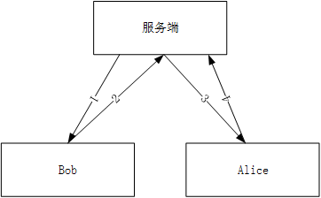
并行训练：
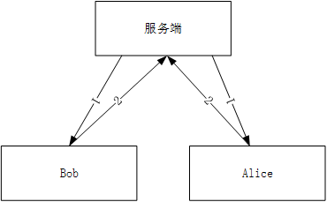
关键实现代码
# 定义虚拟用户
hook = sy.TorchHook(torch)
bob = sy.VirtualWorker(hook, id="bob")
alice = sy.VirtualWorker(hook, id="alice")
# 数据通信
data.send(bob)
model.send(data.location)
modelget()
测试结果
设备GTX1080Ti，MNIST手写数字识别任务，5次迭代训练，训练时间和识别准确率
Syft |
with CUDA |
No CUDA |
|---|---|---|
中心化 |
6.88862s (98%) |
184.83739s (98%) |
非并行训练 |
307.39693s (98%) |
423.53645s (98%) |
并行训练，采用联邦平均算法：
Syft |
1 |
2 |
3 |
4 |
5 |
|---|---|---|---|---|---|
Bob |
95.5% |
97.1% |
98.1% |
98.2% |
98.5% |
Alice |
95.5% |
97.0% |
97.9% |
97.0% |
96.9% |
Model |
73.6% |
87.2% |
71.8% |
86.0% |
64.5% |
2、Flower¶
Flower服务器通过名为Client的接口接入到客户端，当服务器选择客户端进行训练时，通过网络发送训练指令，客户端接收指令，调用Client方法运行代码（即训练我们定义的神经网络）
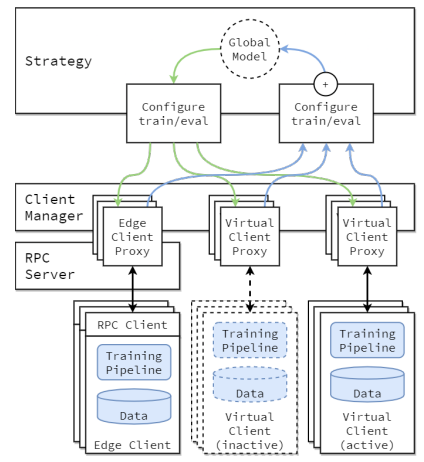
Flower提供便捷的类NumpyClient，可以更方便实现Client接口，通常会使用以下方法：
get_parameters：返回NumPy ndarrays模型权重，返回当前客户端的模型参数
set_parameters：根据从服务器接收的参数更新本地模型权重
fit：从服务端接收模型参数，在本地数据集上训练模型，并将模型参数返回给服务端
evaluate：从服务端接收模型参数，在本地数据集上评估模型，并将评估结果返回给服务端
Flower框架支持的联邦学习策略
FedAvg：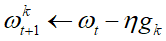，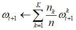
QFedAvg：资源分配公平性，损失大的参与者权重更高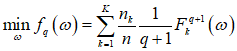
FedAvgM：提出基于“动量”的解决方案，有效缓解Non-IID带来的性能下降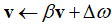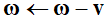
FedProx：整合所有参与训练的局部模型，局部模型的目标函数为损失函数加上proximal terms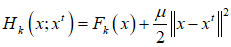
FedAdagrad：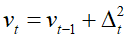
FedYogi：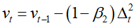
FedAdam：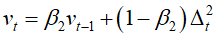
测试结果
设备RTX3090Ti，MNIST手写数字识别任务，5次迭代训练，5轮联邦通信
自适应算法的初始学习率为0.01，beta_1=0.9，beta_2=0.99
Flower/rounds |
1 |
2 |
3 |
4 |
5 |
|---|---|---|---|---|---|
FedAvg |
0.9835 |
0.9892 |
0.989 |
0.9913 |
0.9883 |
FedAvgM |
0.9838 |
0.9894 |
0.9892 |
0.9908 |
0.9919 |
FaultTolerantFedAvg |
0.9836 |
0.9895 |
0.9908 |
0.9917 |
0.9916 |
FedOpt |
0.9835 |
0.9891 |
0.9907 |
0.9911 |
0.9918 |
FedYogi |
0.8913 |
0.9681 |
0.9787 |
0.9866 |
0.9909 |
FedAdm |
0.7905 |
0.9786 |
0.9886 |
0.9888 |
0.9886 |
FedAdagrad |
0.8119 |
0.948 |
0.9291 |
0.9814 |
0.9749 |